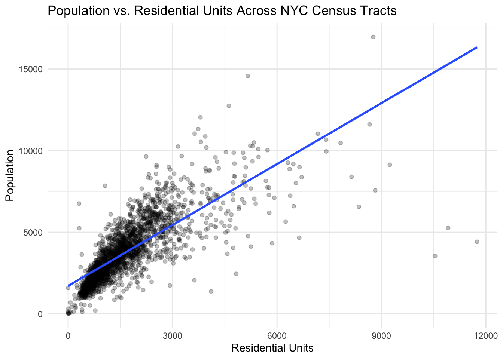
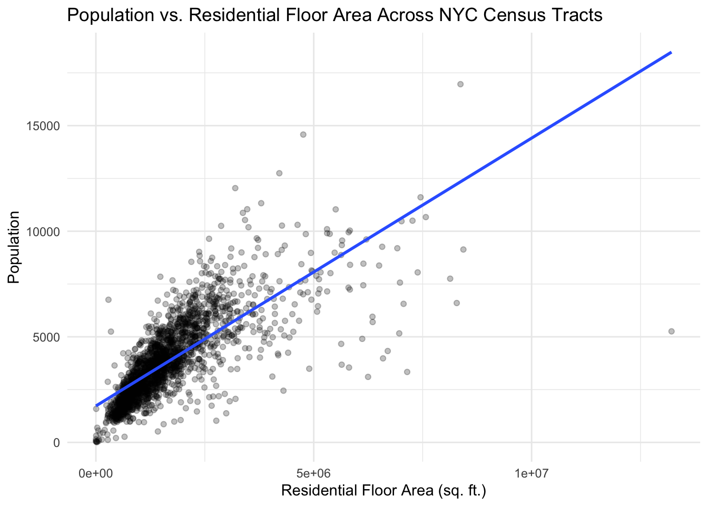
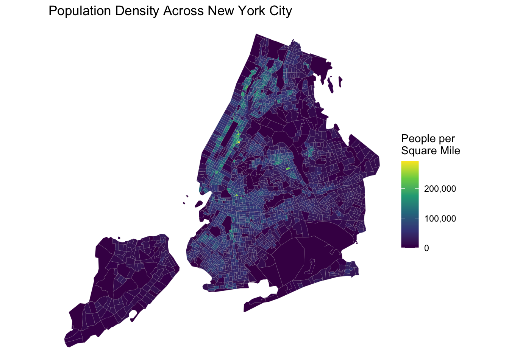
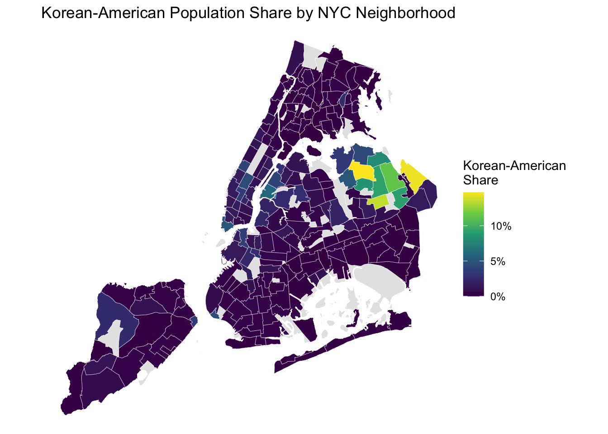
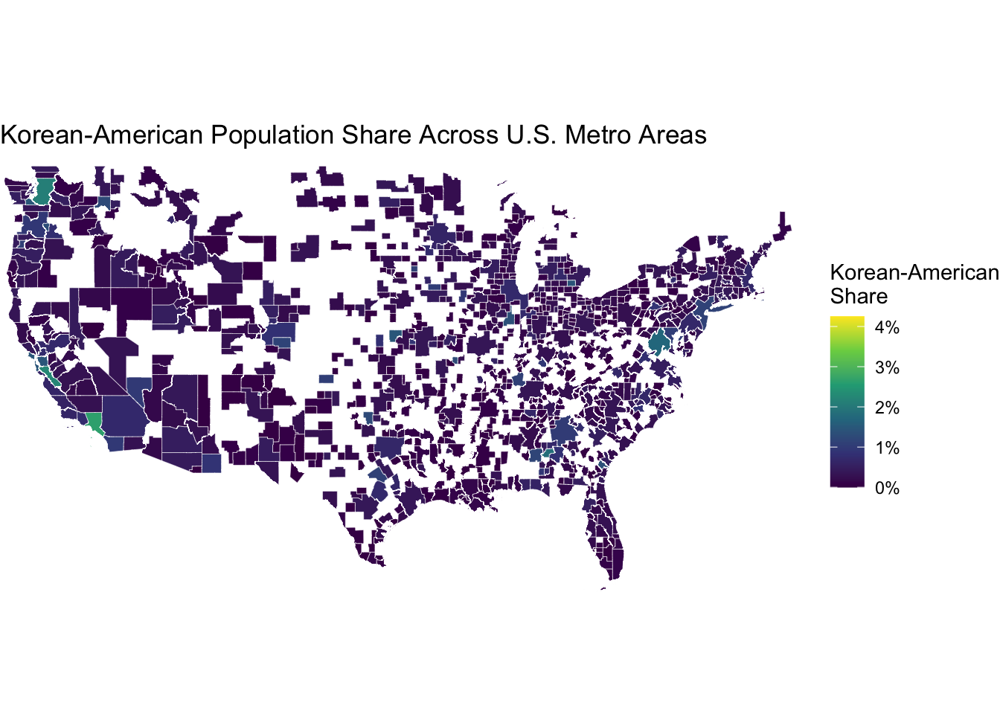

library(tidyverse)
library(tidycensus)
library(sf)
library(httr2)
library(gt)
library(scales)
library(janitor)
dir.create("data/mp03", recursive = TRUE, showWarnings = FALSE)
ANCESTRY_LABEL <- "Korean-American"
ANCESTRY_VAR <- "B02018_005"
TOTAL_POP_VAR <- "B01003_001"
ACS1_YEAR <- 2025
ACS5_YEAR <- 2024Mini-Project #03: Where My People At?
Introduction
The study analyzes the spatial distribution of the Korean-American communities in New York City as well as in the United States of America as a whole. The analysis is based on statistics from the American Community Survey and also neighborhood data and information about land use in New York City.
Setup
Task 0: Census API Key
Task 1: CBSA Population Breakdown
cbsa_cache <- "data/mp03/korean_cbsa_2024.csv"
if (file.exists(cbsa_cache)) {
CBSA_POP <- read_csv(cbsa_cache, show_col_types = FALSE)
} else {
CBSA_POP <- get_acs(
geography = "cbsa",
variables = c(
korean = ANCESTRY_VAR,
total = TOTAL_POP_VAR
),
year = 2024,
survey = "acs5",
output = "wide"
) |>
transmute(
GEOID,
NAME,
korean = koreanE,
total = totalE,
korean_share = korean / total
)
write_csv(CBSA_POP, cbsa_cache)
}
CBSA_POP |>
arrange(desc(korean_share)) |>
slice_head(n = 10)# A tibble: 10 × 5
GEOID NAME korean total korean_share
<dbl> <chr> <dbl> <dbl> <dbl>
1 46520 Urban Honolulu, HI Metro Area 42534 1.00e6 0.0425
2 31080 Los Angeles-Long Beach-Anaheim, CA Metro Ar… 343006 1.30e7 0.0264
3 41940 San Jose-Sunnyvale-Santa Clara, CA Metro Ar… 43894 1.97e6 0.0223
4 42660 Seattle-Tacoma-Bellevue, WA Metro Area 85648 4.06e6 0.0211
5 25900 Hilo-Kailua, HI Micro Area 3873 2.06e5 0.0188
6 27980 Kahului-Wailuku, HI Metro Area 3045 1.65e5 0.0185
7 12220 Auburn-Opelika, AL Metro Area 3694 2.00e5 0.0185
8 28180 Kapaa, HI Micro Area 1299 7.37e4 0.0176
9 47900 Washington-Arlington-Alexandria, DC-VA-MD-W… 108241 6.32e6 0.0171
10 36500 Olympia-Lacey-Tumwater, WA Metro Area 4415 2.99e5 0.0148Task 2: NYC Tract Population Breakdown
tract_cache <- "data/mp03/nyc_tracts_korean_2024.gpkg"
if (file.exists(tract_cache)) {
NYC_TRACTS <- st_read(tract_cache, quiet = TRUE)
} else {
NYC_TRACTS <- get_acs(
geography = "tract",
variables = c(
korean = ANCESTRY_VAR,
total = TOTAL_POP_VAR
),
state = "NY",
county = c("Bronx", "Kings", "New York", "Queens", "Richmond"),
year = 2024,
survey = "acs5",
output = "wide",
geometry = TRUE
) |>
transmute(
GEOID,
NAME,
korean = koreanE,
total = totalE,
korean_share = if_else(total > 0, korean / total, NA_real_),
geometry
)
st_write(
NYC_TRACTS,
tract_cache,
delete_dsn = TRUE,
quiet = TRUE
)
}
glimpse(NYC_TRACTS)Rows: 2,327
Columns: 6
$ GEOID <chr> "36005037600", "36005023502", "36005006400", "36005039100…
$ NAME <chr> "Census Tract 376; Bronx County; New York", "Census Tract…
$ korean <dbl> 0, 0, 0, 7, 0, 0, 0, 0, 0, 0, 2, 5, 0, 0, 2, 0, 12, 0, 0,…
$ total <dbl> 2115, 4490, 4194, 6071, 5023, 2949, 2433, 2964, 4942, 773…
$ korean_share <dbl> 0.0000000000, 0.0000000000, 0.0000000000, 0.0011530226, 0…
$ geom <MULTIPOLYGON [°]> MULTIPOLYGON (((-73.87038 4..., MULTIPOLYGON…Task 3: Download NYC Neighborhood Tabulation Areas
load_nyc_nta <- function() {
data_dir <- "data/mp03"
zip_file <- file.path(data_dir, "nyc_nta_2020.zip")
unzip_dir <- file.path(data_dir, "nyc_nta_2020")
dir.create(
data_dir,
recursive = TRUE,
showWarnings = FALSE
)
nta_url <- "https://data.cityofnewyork.us/api/geospatial/9nt8-h7nd?method=export&format=Shapefile"
if (!dir.exists(unzip_dir)) {
if (!file.exists(zip_file)) {
request(nta_url) |>
req_retry(max_tries = 5) |>
req_perform(path = zip_file)
}
dir.create(
unzip_dir,
recursive = TRUE,
showWarnings = FALSE
)
unzip(
zip_file,
exdir = unzip_dir
)
}
shp_file <- list.files(
unzip_dir,
pattern = "\\.shp$",
full.names = TRUE
)[1]
nta <- sf::st_read(
shp_file,
quiet = TRUE
) |>
select(
nta_code = nta2020,
nta_name = ntaname,
geometry
)
return(nta)
}
NYC_NTA <- load_nyc_nta()
glimpse(NYC_NTA)Rows: 262
Columns: 3
$ nta_code <chr> "BK0101", "BK0102", "BK0103", "BK0104", "BK0201", "BK0202", "…
$ nta_name <chr> "Greenpoint", "Williamsburg", "South Williamsburg", "East Wil…
$ geometry <MULTIPOLYGON [°]> MULTIPOLYGON (((-73.93213 4..., MULTIPOLYGON (((…Task 4: Aggregate Census Tract Data to the NTA Level
# Making sure both spatial objects use the same coordinate system
NYC_NTA_MATCHED <- NYC_NTA |>
st_transform(st_crs(NYC_TRACTS))
# Assigning each census tract to the NTA with the largest spatial overlap
TRACT_TO_NTA <- NYC_TRACTS |>
st_join(
NYC_NTA_MATCHED,
join = st_intersects,
largest = TRUE
)
# Aggregate tract-level population data to the NTA level
NTA_POP_SUMMARY <- TRACT_TO_NTA |>
st_drop_geometry() |>
filter(!is.na(nta_code)) |>
group_by(
nta_code,
nta_name
) |>
summarise(
population = sum(total, na.rm = TRUE),
korean_population = sum(korean, na.rm = TRUE),
.groups = "drop"
) |>
mutate(
korean_share = korean_population / population
)
# Reconnect the summarized values to the NTA geometry
NYC_NTA_POP <- NYC_NTA_MATCHED |>
left_join(
NTA_POP_SUMMARY,
by = c("nta_code", "nta_name")
)
glimpse(NYC_NTA_POP)Rows: 262
Columns: 6
$ nta_code <chr> "BK0101", "BK0102", "BK0103", "BK0104", "BK0201", "B…
$ nta_name <chr> "Greenpoint", "Williamsburg", "South Williamsburg", …
$ population <dbl> 39784, 66612, 50948, 50775, 26031, 39977, 33180, 292…
$ korean_population <dbl> 780, 1567, 124, 296, 446, 1460, 355, 435, 0, 603, 41…
$ korean_share <dbl> 0.0196058717, 0.0235242899, 0.0024338541, 0.00582964…
$ geometry <MULTIPOLYGON [°]> MULTIPOLYGON (((-73.93213 4..., MULTIPO…Task 5: Download PLUTO
load_pluto <- function() {
data_dir <- "data/mp03"
cache_file <- file.path(data_dir, "pluto.csv")
dir.create(
data_dir,
recursive = TRUE,
showWarnings = FALSE
)
if (file.exists(cache_file)) {
return(
read_csv(
cache_file,
show_col_types = FALSE,
col_types = cols(
.default = col_guess(),
bct2020 = col_character()
)
)
)
}
base_url <- "https://data.cityofnewyork.us/resource/64uk-42ks.csv"
page_size <- 50000
offset <- 0
pages <- list()
repeat {
message(
"Downloading PLUTO rows starting at offset ",
offset
)
req <- request(base_url) |>
req_url_query(
`$limit` = page_size,
`$offset` = offset,
`$select` = paste(
c(
"borough",
"bct2020",
"officearea",
"unitsres",
"resarea",
"comarea",
"numfloors"
),
collapse = ","
)
)
resp <- req_perform(req)
page <- resp_body_string(resp) |>
read_csv(show_col_types = FALSE)
pages[[length(pages) + 1]] <- page
if (nrow(page) < page_size) {
break
}
offset <- offset + page_size
}
pluto <- bind_rows(pages) |>
mutate(
bct2020 = as.character(bct2020),
across(
c(
officearea,
unitsres,
resarea,
comarea,
numfloors
),
as.numeric
)
)
write_csv(
pluto,
cache_file
)
pluto
}
PLUTO <- load_pluto()
glimpse(PLUTO)Rows: 858,284
Columns: 7
$ borough <chr> "QN", "QN", "QN", "QN", "QN", "QN", "QN", "QN", "QN", "QN",…
$ bct2020 <chr> "4157903", "4157903", "4157903", "4157903", "4157903", "415…
$ officearea <dbl> 0, 0, 0, 0, 0, 0, 0, 0, 0, 0, 0, 0, 0, 0, 0, 0, 0, 0, 0, 0,…
$ unitsres <dbl> 1, 1, 1, 1, 1, 1, 1, 1, 1, 1, 1, 1, 1, 1, 1, 1, 1, 1, 1, 1,…
$ resarea <dbl> 1864, 960, 1068, 960, 960, 2312, 960, 2792, 1792, 960, 1532…
$ comarea <dbl> 0, 0, 0, 0, 0, 0, 0, 0, 0, 0, 0, 0, 0, 0, 0, 0, 0, 0, 0, 0,…
$ numfloors <dbl> 2.00, 1.50, 1.50, 1.50, 1.50, 2.00, 1.50, 2.00, 1.50, 1.50,…Task 6: Exploratory Data Analysis
Question 1: Which NYC Census Tract Has the Most Office Floor Area?
office_by_bct <- PLUTO |>
mutate(
officearea = replace_na(officearea, 0)
) |>
filter(
!is.na(bct2020),
bct2020 != ""
) |>
group_by(bct2020) |>
summarise(
office_area_sqft = sum(officearea, na.rm = TRUE),
.groups = "drop"
) |>
arrange(desc(office_area_sqft))
top_office_tract <- office_by_bct |>
slice_head(n = 1)
top_office_tract |>
gt() |>
cols_label(
bct2020 = "2020 Census Tract ID",
office_area_sqft = "Office Floor Area (sq. ft.)"
) |>
fmt_number(
columns = office_area_sqft,
decimals = 0
) |>
tab_header(
title = "NYC Census Tract with the Most Office Floor Area"
)| NYC Census Tract with the Most Office Floor Area | |
| 2020 Census Tract ID | Office Floor Area (sq. ft.) |
|---|---|
| 1000900 | 18,354,103 |
The census tract that held the highest total of office floor area in PLUTO dataset was 1000900, which contained about 18.35 million square feet of offices.
Question 2: Which NYC NTA Has the Most Residential Units?
# Create PLUTO residential-unit totals by census tract
tract_units <- PLUTO |>
filter(
!is.na(bct2020),
bct2020 != ""
) |>
group_by(bct2020) |>
summarise(
residential_units = sum(unitsres, na.rm = TRUE),
.groups = "drop"
)
# Create matching PLUTO-style tract IDs for the Census tract/NTA crosswalk
tract_nta_lookup <- TRACT_TO_NTA |>
st_drop_geometry() |>
mutate(
county_fips = substr(GEOID, 3, 5),
borough_code = case_when(
county_fips == "061" ~ "1", # Manhattan
county_fips == "005" ~ "2", # Bronx
county_fips == "047" ~ "3", # Brooklyn
county_fips == "081" ~ "4", # Queens
county_fips == "085" ~ "5" # Staten Island
),
tract_code = substr(GEOID, 6, 11),
bct2020 = paste0(borough_code, tract_code)
) |>
select(
bct2020,
nta_code,
nta_name
) |>
distinct()
# Combine PLUTO with NTA names and total residential units
nta_units <- tract_units |>
left_join(
tract_nta_lookup,
by = "bct2020"
) |>
filter(!is.na(nta_code)) |>
group_by(
nta_code,
nta_name
) |>
summarise(
residential_units = sum(residential_units, na.rm = TRUE),
.groups = "drop"
) |>
arrange(desc(residential_units))
top_nta_units <- nta_units |>
slice_head(n = 10)
top_nta_units |>
gt() |>
cols_label(
nta_code = "NTA Code",
nta_name = "Neighborhood",
residential_units = "Residential Units"
) |>
fmt_number(
columns = residential_units,
decimals = 0
) |>
tab_header(
title = "NYC NTAs with the Most Residential Units"
)| NYC NTAs with the Most Residential Units | ||
| NTA Code | Neighborhood | Residential Units |
|---|---|---|
| MN0801 | Upper East Side-Lenox Hill-Roosevelt Island | 60,306 |
| MN0702 | Upper West Side (Central) | 57,314 |
| MN0803 | Upper East Side-Yorkville | 50,986 |
| MN0401 | Chelsea-Hudson Yards | 46,130 |
| MN0701 | Upper West Side-Lincoln Square | 45,384 |
| QN0602 | Forest Hills | 43,687 |
| MN0603 | Murray Hill-Kips Bay | 42,824 |
| MN0402 | Hell's Kitchen | 40,309 |
| MN0303 | East Village | 40,193 |
| MN0802 | Upper East Side-Carnegie Hill | 40,064 |
The Upper East Side–Lenox Hill–Roosevelt Island NTA had the most residential units of any NYC NTA with 60,306 units. The next largest was Upper West Side (Central) (57,314) and then Upper East Side–Yorkville (50,986).
Question 3: Which NYC Census Tracts Have the Highest Population Density?
top_nta_count <- NYC_NTA_POP |>
st_drop_geometry() |>
filter(!is.na(korean_population)) |>
arrange(desc(korean_population)) |>
slice_head(n = 10)
top_nta_share <- NYC_NTA_POP |>
st_drop_geometry() |>
filter(
!is.na(korean_share),
population > 0
) |>
arrange(desc(korean_share)) |>
slice_head(n = 10)
top_nta_count |>
select(
nta_name,
korean_population,
population,
korean_share
) |>
gt() |>
cols_label(
nta_name = "Neighborhood",
korean_population = "Korean-American Population",
population = "Total Population",
korean_share = "Korean-American Share"
) |>
fmt_number(
columns = c(korean_population, population),
decimals = 0
) |>
fmt_percent(
columns = korean_share,
decimals = 2
) |>
tab_header(
title = "NYC Neighborhoods with the Largest Korean-American Populations"
)| NYC Neighborhoods with the Largest Korean-American Populations | |||
| Neighborhood | Korean-American Population | Total Population | Korean-American Share |
|---|---|---|---|
| Murray Hill-Broadway Flushing | 7,944 | 53,912 | 14.74% |
| Bayside | 4,014 | 35,395 | 11.34% |
| Douglaston-Little Neck | 3,697 | 25,623 | 14.43% |
| Auburndale | 3,141 | 34,216 | 9.18% |
| Flushing-Willets Point | 3,116 | 61,079 | 5.10% |
| Upper West Side-Lincoln Square | 2,818 | 69,909 | 4.03% |
| Fresh Meadows-Utopia | 2,793 | 20,679 | 13.51% |
| East Flushing | 2,632 | 30,771 | 8.55% |
| Financial District-Battery Park City | 2,451 | 48,198 | 5.09% |
| Oakland Gardens-Hollis Hills | 2,257 | 24,840 | 9.09% |
top_nta_share |>
select(
nta_name,
korean_population,
population,
korean_share
) |>
gt() |>
cols_label(
nta_name = "Neighborhood",
korean_population = "Korean-American Population",
population = "Total Population",
korean_share = "Korean-American Share"
) |>
fmt_number(
columns = c(korean_population, population),
decimals = 0
) |>
fmt_percent(
columns = korean_share,
decimals = 2
) |>
tab_header(
title = "NYC Neighborhoods with the Highest Korean-American Shares"
)| NYC Neighborhoods with the Highest Korean-American Shares | |||
| Neighborhood | Korean-American Population | Total Population | Korean-American Share |
|---|---|---|---|
| Murray Hill-Broadway Flushing | 7,944 | 53,912 | 14.74% |
| Douglaston-Little Neck | 3,697 | 25,623 | 14.43% |
| Fresh Meadows-Utopia | 2,793 | 20,679 | 13.51% |
| Bayside | 4,014 | 35,395 | 11.34% |
| Auburndale | 3,141 | 34,216 | 9.18% |
| Oakland Gardens-Hollis Hills | 2,257 | 24,840 | 9.09% |
| East Flushing | 2,632 | 30,771 | 8.55% |
| Bay Terrace-Clearview | 1,879 | 23,195 | 8.10% |
| Long Island City-Hunters Point | 1,815 | 30,464 | 5.96% |
| Flushing-Willets Point | 3,116 | 61,079 | 5.10% |
These findings reveal that Korean-Americans have a heavy concentration in the northeast Queens neighborhoods. The greatest percentage of Korean-Americans is seen in Murray Hill–Broadway Flushing, which has 14.74% of Korean-American population. This is followed by Douglaston-Little Neck with 14.43%, and Fresh Meadows-Utopia with 13.51%.
Question 5: How Is the Korean-American Population Distributed Across Los Angeles?
la_puma_cache <- "data/mp03/la_korean_puma_2024.csv"
if (file.exists(la_puma_cache)) {
LA_PUMA <- read_csv(
la_puma_cache,
show_col_types = FALSE
)
} else {
LA_PUMA <- get_acs(
geography = "public use microdata area",
variables = c(
korean = ANCESTRY_VAR,
total = TOTAL_POP_VAR
),
state = "CA",
year = 2024,
survey = "acs5",
output = "wide"
) |>
transmute(
GEOID,
NAME,
korean = koreanE,
total = totalE,
korean_share = korean / total
) |>
filter(
str_detect(
NAME,
regex("LA City", ignore_case = TRUE)
)
)
write_csv(
LA_PUMA,
la_puma_cache
)
}
LA_PUMA |>
arrange(desc(korean_share)) |>
select(
NAME,
korean,
total,
korean_share
) |>
gt() |>
cols_label(
NAME = "Los Angeles Area",
korean = "Korean-American Population",
total = "Total Population",
korean_share = "Korean-American Share"
) |>
fmt_number(
columns = c(korean, total),
decimals = 0
) |>
fmt_percent(
columns = korean_share,
decimals = 2
) |>
tab_header(
title = "Korean-American Population Across Los Angeles"
)| Korean-American Population Across Los Angeles | |||
| Los Angeles Area | Korean-American Population | Total Population | Korean-American Share |
|---|---|---|---|
| Los Angeles County (Central)--LA City (Central/Koreatown) PUMA; California | 21,565 | 111,045 | 19.42% |
| Los Angeles County (West Central)--LA City (Central/Hancock Park & Mid-Wilshire) PUMA; California | 18,084 | 162,974 | 11.10% |
| Los Angeles County--LA City (East Central/Silver Lake, Echo Park & Westlake) PUMA; California | 11,543 | 197,013 | 5.86% |
| Los Angeles County--LA City (Central/Univ. of Southern California & Exposition Park) PUMA; California | 4,472 | 106,906 | 4.18% |
| Los Angeles County (West Central)--LA City (Central/Westwood & West Los Angeles) PUMA; California | 4,316 | 106,093 | 4.07% |
| Los Angeles County (Central)--LA City (East Central/Central City & Boyle Heights) PUMA; California | 7,512 | 187,457 | 4.01% |
| Los Angeles County (Central)--LA City (East Central & Hollywood) PUMA; California | 6,561 | 172,839 | 3.80% |
| Los Angeles County (North)--LA City (Northwest/Chatsworth & Porter Ranch) PUMA; California | 6,234 | 183,130 | 3.40% |
| Los Angeles County (West Central)--LA City (West Los Angeles, Century City & Palms) PUMA; California | 3,112 | 102,160 | 3.05% |
| Los Angeles County (South)--LA City (South/San Pedro) PUMA; California | 3,680 | 181,743 | 2.02% |
| Los Angeles County--LA City (Mount Washington, Highland Park & Glassell Park) PUMA; California | 3,658 | 181,058 | 2.02% |
| Los Angeles County (Central)--LA City (Central) PUMA; California | 2,167 | 117,735 | 1.84% |
| Los Angeles County (North)--LA City (North Central/Granada Hills & Sylmar) PUMA; California | 2,278 | 140,426 | 1.62% |
| Los Angeles County (North)--LA City (Northeast/Sunland, Sun Valley & Tujunga) PUMA; California | 1,738 | 133,040 | 1.31% |
| Los Angeles County (North)--LA City (Northeast/North Hollywood & Valley Village) PUMA; California | 1,501 | 132,163 | 1.14% |
| Los Angeles County--LA City (Northwest/Canoga Park, Winnetka & Woodland Hills) PUMA; California | 2,101 | 185,061 | 1.14% |
| Los Angeles County (Central)--LA City (Central/West Adams & Baldwin Hills) PUMA; California | 1,691 | 160,119 | 1.06% |
| Riverside County (Southwest)--Temecula City PUMA; California | 1,507 | 144,755 | 1.04% |
| Los Angeles County (Northwest)--LA City (North Central/Van Nuys & North Sherman Oaks) PUMA; California | 1,704 | 164,473 | 1.04% |
| Los Angeles County (Northwest)--LA City (Northwest/Encino & Tarzana) PUMA; California | 1,583 | 172,131 | 0.92% |
| Los Angeles County (North)--LA City (North Central/Mission Hills & Panorama City) PUMA; California | 1,006 | 137,688 | 0.73% |
| Los Angeles County (Central)--LA City (Southeast/East Vernon) PUMA; California | 577 | 118,105 | 0.49% |
| Los Angeles County (South Central)--LA City (South Central/Westmont) PUMA; California | 243 | 182,303 | 0.13% |
| Los Angeles County (South Central)--LA City (South Central/Watts) PUMA; California | 202 | 153,329 | 0.13% |
Korean-Americans live more in central areas of Los Angeles. Central/Koreatown PUMA had the largest number of Korean-Americans at 19.42%, with 11.10% in Central/Hancock Park and Mid-Wilshire. This number declines to 5.86% in the Silver Lake, Echo Park, and Westlake area, which indicates that the Korean-American population is clustered in Koreatown and central Los Angeles neighborhoods but not equally dispersed throughout Los Angeles.
Question 7: What Is the Relationship Between Population and Housing Across NYC Census Tracts?
tract_density <- NYC_TRACTS |>
sf::st_drop_geometry() |>
dplyr::mutate(
county_fips = substr(GEOID, 3, 5),
borough_code = dplyr::case_when(
county_fips == "061" ~ "1",
county_fips == "005" ~ "2",
county_fips == "047" ~ "3",
county_fips == "081" ~ "4",
county_fips == "085" ~ "5"
),
bct2020 = paste0(
borough_code,
substr(GEOID, 6, 11)
)
) |>
dplyr::select(
bct2020,
population = total
) |>
dplyr::left_join(
PLUTO |>
dplyr::group_by(bct2020) |>
dplyr::summarise(
units_res = sum(unitsres, na.rm = TRUE),
residential_area = sum(resarea, na.rm = TRUE),
.groups = "drop"
),
by = "bct2020"
)
tract_housing_relationship <- tract_density |>
dplyr::filter(
!is.na(population),
!is.na(units_res),
!is.na(residential_area),
population > 0,
units_res > 0,
residential_area > 0
)
ggplot2::ggplot(
tract_housing_relationship,
ggplot2::aes(
x = units_res,
y = population
)
) +
ggplot2::geom_point(alpha = 0.25) +
ggplot2::geom_smooth(
method = "lm",
se = FALSE
) +
ggplot2::labs(
title = "Population vs. Residential Units Across NYC Census Tracts",
x = "Residential Units",
y = "Population"
) +
ggplot2::theme_minimal()
ggplot2::ggplot(
tract_housing_relationship,
ggplot2::aes(
x = residential_area,
y = population
)
) +
ggplot2::geom_point(alpha = 0.25) +
ggplot2::geom_smooth(
method = "lm",
se = FALSE
) +
ggplot2::labs(
title = "Population vs. Residential Floor Area Across NYC Census Tracts",
x = "Residential Floor Area (sq. ft.)",
y = "Population"
) +
ggplot2::theme_minimal()
There is a clear strong positive association that can be seen between population and housing within the NYC census tracts. The census tracts that contain more square footage in the form of residential area tend to have larger populations, indicating that there may be a linear association between them. There are some outliers observed from the regression line, so housing area is not the only factor affecting population size.
Question 8: Which NYC NTAs Have the Tallest Buildings?
nta_building_height <- PLUTO |>
filter(
!is.na(bct2020),
bct2020 != "",
!is.na(numfloors),
numfloors > 0,
numfloors <= 150
) |>
left_join(
tract_nta_lookup,
by = "bct2020"
) |>
filter(!is.na(nta_code)) |>
group_by(
nta_code,
nta_name
) |>
summarise(
tallest_building_floors = max(numfloors, na.rm = TRUE),
.groups = "drop"
) |>
arrange(desc(tallest_building_floors))
top_tallest_ntas <- nta_building_height |>
slice_head(n = 10)
top_tallest_ntas |>
gt() |>
cols_label(
nta_code = "NTA Code",
nta_name = "Neighborhood",
tallest_building_floors = "Tallest Building (Floors)"
) |>
fmt_number(
columns = tallest_building_floors,
decimals = 0
) |>
tab_header(
title = "NYC NTAs with the Tallest Buildings"
)| NYC NTAs with the Tallest Buildings | ||
| NTA Code | Neighborhood | Tallest Building (Floors) |
|---|---|---|
| MN0101 | Financial District-Battery Park City | 104 |
| MN0501 | Midtown South-Flatiron-Union Square | 102 |
| MN0502 | Midtown-Times Square | 98 |
| MN0604 | East Midtown-Turtle Bay | 77 |
| BK0202 | Downtown Brooklyn-DUMBO-Boerum Hill | 74 |
| MN0301 | Chinatown-Two Bridges | 72 |
| MN0401 | Chelsea-Hudson Yards | 71 |
| MN0102 | Tribeca-Civic Center | 70 |
| QN0201 | Long Island City-Hunters Point | 69 |
| QN0105 | Queensbridge-Ravenswood-Dutch Kills | 64 |
Following exclusion of a highly improbable record for PLUTO, having 342.87-floor value, the buildings with the greatest heights tend to be located mainly in Manhattan. Also, to point out, the Financial District–Battery Park City was shown to have the highest recorded building height, which had 104 floors, whereas Midtown South–Flatiron–Union Square came second with 102 floors.
Question 9: How Does Population Density Vary Across New York City?
NYC_DENSITY <- NYC_TRACTS |>
sf::st_transform(2263)
NYC_DENSITY <- NYC_DENSITY |>
dplyr::mutate(
area_sq_miles =
as.numeric(sf::st_area(sf::st_geometry(NYC_DENSITY))) / (5280^2),
population_density = total / area_sq_miles
)
ggplot2::ggplot(NYC_DENSITY) +
ggplot2::geom_sf(
ggplot2::aes(fill = population_density),
color = "grey70",
linewidth = 0.05
) +
ggplot2::scale_fill_viridis_c(
labels = scales::comma,
na.value = "grey90"
) +
ggplot2::labs(
title = "Population Density Across New York City",
fill = "People per\nSquare Mile"
) +
ggplot2::theme_void()
The population density in New York City varies widely. The most densely populated areas are found mostly in Manhattan and certain parts of Brooklyn, Queens, and the Bronx, but Staten Island and other outer areas of the city have much less population density. It is clear from the map that there is considerable variation in the distribution of population density in all five boroughs.
Question 10: How Many New Yorkers Live in Primarily Commercial Areas?
tract_population <- NYC_TRACTS |>
sf::st_drop_geometry() |>
dplyr::mutate(
county_fips = substr(GEOID, 3, 5),
borough_code = dplyr::case_when(
county_fips == "061" ~ "1",
county_fips == "005" ~ "2",
county_fips == "047" ~ "3",
county_fips == "081" ~ "4",
county_fips == "085" ~ "5"
),
bct2020 = paste0(
borough_code,
substr(GEOID, 6, 11)
)
) |>
dplyr::select(
bct2020,
population = total
)
# Summarize commercial and residential floor area by tract
commercial_by_tract <- PLUTO |>
dplyr::group_by(bct2020) |>
dplyr::summarise(
commercial_area = sum(comarea, na.rm = TRUE),
residential_area = sum(resarea, na.rm = TRUE),
.groups = "drop"
) |>
dplyr::left_join(
tract_population,
by = "bct2020"
)
# Define primarily commercial tracts as those with
# more commercial than residential floor area
commercial_population <- commercial_by_tract |>
dplyr::filter(
commercial_area > residential_area,
!is.na(population)
) |>
dplyr::summarise(
population_in_commercial_areas = sum(population, na.rm = TRUE)
) |>
dplyr::pull(population_in_commercial_areas)
total_nyc_population <- tract_population |>
dplyr::summarise(
total_population = sum(population, na.rm = TRUE)
) |>
dplyr::pull(total_population)
commercial_summary <- tibble::tibble(
population_in_commercial_areas = commercial_population,
total_population = total_nyc_population,
share_in_commercial_areas =
commercial_population / total_nyc_population
)
commercial_summary |>
gt::gt() |>
gt::cols_label(
population_in_commercial_areas =
"Population in Primarily Commercial Areas",
total_population =
"Total Population",
share_in_commercial_areas =
"Share of Population"
) |>
gt::fmt_number(
columns = c(
population_in_commercial_areas,
total_population
),
decimals = 0,
use_seps = TRUE
) |>
gt::fmt_percent(
columns = share_in_commercial_areas,
decimals = 2
) |>
gt::tab_header(
title = "New Yorkers Living in Primarily Commercial Census Tracts"
)| New Yorkers Living in Primarily Commercial Census Tracts | ||
| Population in Primarily Commercial Areas | Total Population | Share of Population |
|---|---|---|
| 660,569 | 8,483,844 | 7.79% |
Given our definition for a commercially-dominated census tract, 660,569 New Yorkers live in commercially dominated areas, which make up 7.79% of the population in the matched tract data set.
According to the definition whereby a census tract is considered primarily commercial if its total commercial square footage is more than the total residential square footage, then about 660,569 New Yorkers live in such areas. This means that about 7.79% of the total New York City population in the matched NYC tract data lives in areas with more residential than commercial square footage.
Task 7: Atlas of American Communities Entry
Korean-Americans in New York City and Across the United States
For over a century, many Korean-Americans have moved to the United States to settle and create their communities here. Some of the first Korean immigrants came during the early 1900s to work in Hawaii as farmers. Later on, individuals also began to immigrate to the United States significantly following the passage of the Immigration and Nationality Act of 1965. This passed to eliminate limits on how many people could immigrate from Asian nations. Overall, research shows that Korean-Americans have increased their population from roughly 290,000 in 1980 to approximately 864,000 in 2000 and ultimately to about 1.1 million in 2010. To add on, Korean-American cultural organizations, restaurants, churches, and businesses have also become more prominent in various regions across the United States.
Within New York City specifically, many Korean-Americans live primarily in northeastern Queens. According to the statistics, the region with the highest share of Korean-Americans is Murray Hill-Broadway Flushing with 14.74%. Following this is Douglaston-Little Neck with 14.43%, then Fresh Meadows-Utopia with 13.51%, and finally Bayside with 11.34%. According to the map for New York City, Korean-Americans are not primarily evenly distributed across the city, but rather remain in a cluster of close regions within Queens. Therefore, this makes sense given the concentration of Korean cultural and business organizations in areas like Little Neck, Bayside, Murray Hill, and Flushing.
NYC_NTA_POP |>
ggplot() +
geom_sf(
aes(fill = korean_share),
color = "white",
linewidth = 0.1
) +
scale_fill_viridis_c(
labels = scales::percent_format(accuracy = 1),
na.value = "grey90"
) +
labs(
title = "Korean-American Population Share by NYC Neighborhood",
fill = "Korean-American\nShare"
) +
theme_void()
There is also a general awareness among the general population that Korean-Americans tend to congregate in specific regions instead of being uniformly dispersed throughout the country. For example, the Los Angeles-Long Beach-Anaheim Metropolitan Statistical Area is home to an estimated 343,006 Korean-Americans, representing about 16.63% of the total number of Korean-Americans analyzed in this study. Also, there are an estimated 145,733 Korean-Americans in New York State representing about 7.07% of the total number of Korean-Americans in the country. Other notable regions include Seattle-Tacoma-Bellevue (4.15%), San Francisco-Oakland-Fremont (3.26%), Washington-Arlington-Alexandria (5.25%), and Chicago-Naperville-Elgin (3.19%). In general across the country Korean-Americans tend to concentrate in a number of metropolitan areas rather than being uniformly dispersed.
cbsa_map_cache <- "data/mp03/cbsa_korean_map_2024.rds"
if (file.exists(cbsa_map_cache)) {
CBSA_MAP <- readRDS(cbsa_map_cache)
} else {
CBSA_MAP <- get_acs(
geography = "cbsa",
variables = c(
korean = ANCESTRY_VAR,
total = TOTAL_POP_VAR
),
year = ACS5_YEAR,
survey = "acs5",
geometry = TRUE,
output = "wide"
) |>
mutate(
korean_population = koreanE,
total_population = totalE,
korean_share = korean_population / total_population
)
saveRDS(CBSA_MAP, cbsa_map_cache)
}
CBSA_MAP |>
st_transform(4326) |>
filter(!is.na(korean_share)) |>
ggplot() +
geom_sf(
aes(fill = korean_share),
color = "white",
linewidth = 0.1
) +
scale_fill_viridis_c(
labels = scales::percent_format(accuracy = 1),
na.value = "grey90"
) +
coord_sf(
xlim = c(-125, -66),
ylim = c(24, 50),
expand = FALSE
) +
labs(
title = "Korean-American Population Share Across U.S. Metro Areas",
fill = "Korean-American\nShare"
) +
theme_void()
Taken together, these two maps show a high degree of clustering of Korean-Americans at the city and national level. The north east portion of Queens in New York City stands out especially. There are also large national clusters in New York and Los Angeles. This could be explained by the effect of family, business, employment, religion, community, businesses and other networks on immigrant settlement and continuation throughout history.
AI Usage Statement
NoteAI Usage Statement
ChatGPT was used to help write the code in this project, but all non-code text was generated without the use of any Generative AI tools. Additionally, ChatGPT was used to provide additional background information on the topic and to brainstorm ideas for the final open-ended prompt.